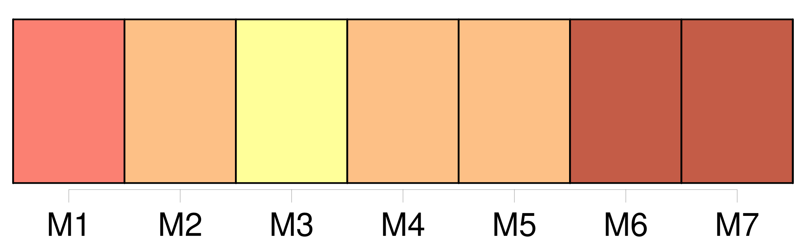
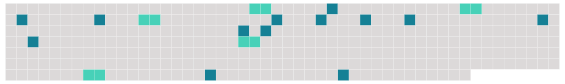

Longueur nb maillons : 18 mentions |
  |
La possession d'état s'établit par une réunion suffisante de faits qui indiquent le rapport de filiation et de parenté entre [un individu] et la famille à laquelle [il] prétend appartenir.
Les principaux de ces faits sont, [1 phrases]
Nul ne peut réclamer un état contraire à celui que [lui] donnent [son] titre de naissance et la possession conforme à ce titre ; [1 phrases]
À défaut de titre et de possession constante, ou si [l'enfant] a été inscrit, soit sous de faux noms, soit comme né de père et mère inconnus, la preuve de filiation peut se faire par témoins. [4 phrases]
La preuve contraire pourra se faire par tous les moyens propres à établir que [le réclamant] n'est pas l'enfant de la mère qu' [il] prétend avoir, ou même, la maternité prouvée, qu' [il] n'est pas l'enfant du mari de la mère. |
 |
La ressource peut être téléchargée sur la page Ortolang
Si vous avez des questions ou vous voyez des erreurs, merci d'envoyer un mail à silvia.federzoni89@gmail.com
Site développé par S. Federzoni (contact)